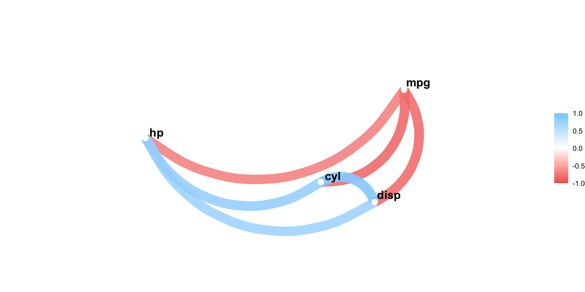
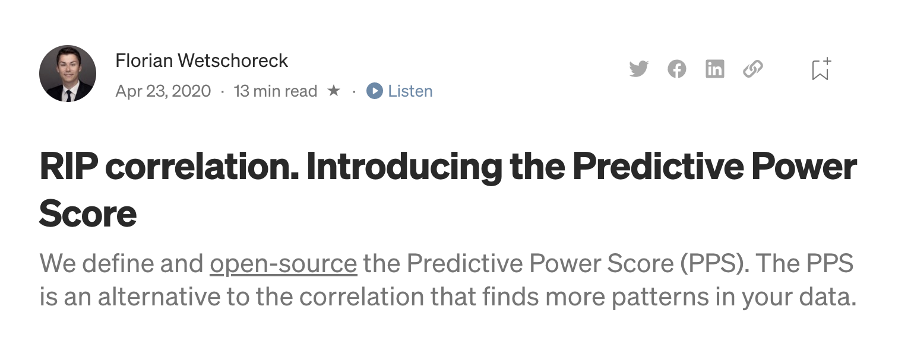

Advanced data exploration with corrr
James Laird-Smith
Link to slides: data-exploration-corrr.jameslairdsmith.com/
Agenda
- Old and busted:
stats::cor() - New hotness:
corrr::correlate() - More general hotness:
corrr::colpair_map() - Experiments:
ppcalc::
In the beginning … there was stats::cor()
mpg cyl disp hp
Mazda RX4 21.0 6 160.0 110
Mazda RX4 Wag 21.0 6 160.0 110
Datsun 710 22.8 4 108.0 93
Hornet 4 Drive 21.4 6 258.0 110
Hornet Sportabout 18.7 8 360.0 175
Valiant 18.1 6 225.0 105
Duster 360 14.3 8 360.0 245
Merc 240D 24.4 4 146.7 62
Merc 230 22.8 4 140.8 95
Merc 280 19.2 6 167.6 123
Merc 280C 17.8 6 167.6 123
Merc 450SE 16.4 8 275.8 180
Merc 450SL 17.3 8 275.8 180
Merc 450SLC 15.2 8 275.8 180
Cadillac Fleetwood 10.4 8 472.0 205
Lincoln Continental 10.4 8 460.0 215
Chrysler Imperial 14.7 8 440.0 230
Fiat 128 32.4 4 78.7 66
Honda Civic 30.4 4 75.7 52
Toyota Corolla 33.9 4 71.1 65
Toyota Corona 21.5 4 120.1 97
Dodge Challenger 15.5 8 318.0 150
AMC Javelin 15.2 8 304.0 150
Camaro Z28 13.3 8 350.0 245
Pontiac Firebird 19.2 8 400.0 175
Fiat X1-9 27.3 4 79.0 66
Porsche 914-2 26.0 4 120.3 91
Lotus Europa 30.4 4 95.1 113
Ford Pantera L 15.8 8 351.0 264
Ferrari Dino 19.7 6 145.0 175
Maserati Bora 15.0 8 301.0 335
Volvo 142E 21.4 4 121.0 109In the beginning … there was stats::cor()
mpg cyl disp hp
mpg 1.0000000 -0.8521620 -0.8475514 -0.7761684
cyl -0.8521620 1.0000000 0.9020329 0.8324475
disp -0.8475514 0.9020329 1.0000000 0.7909486
hp -0.7761684 0.8324475 0.7909486 1.0000000But stats::cor() returns a matrix, which isn’t as easy to work with.
Introducing corrr
- A package for correlations in R.
- Created by Simon Jackson in 2016.
- Since been taken over by the tidymodels team at RStudio.
- Makes working with correlation values a little easier.

Using corrr::correlate()
Using corrr::correlate()
Using corrr::correlate()
Using corrr::correlate()
Using corrr::correlate()
Limitations of corrr::corrrelate()
- Trivially, it only works with correlations.
- This means it’s confined to only numeric-numeric comparisons.
- Even for numeric-numeric pairs, correlations can only detect linear relationships.
- Correlations aren’t the only useful measure of association.
Enter: corrr::colpair_map()
- Just like
corrr::correlate(), it takes data as the first argument and then an arbitrary function (.f) as the second argument.
- The name is a combination of
colpair, meaning column pairs andmap, which is like “apply”.
Application: covariance matrix
Application: covariance matrix
Experiments
Now that we have arbitrary function support, what function should we use?
- Ideally something that didn’t have the limitations of correlation:
- Could handle category-numeric and category-category comparisons.
- Could detect non-linear relationships.
- Still easy to calculate.
Experiments (2)
I am not the first person to think of this:
 - Implemented in Python. Uses random forest model to determine how good one column is at predicting another.
Experiments (3)
I have ported it to R as a (highly experimental) package:
- There is currently a single function,
ppcalc_randomforest() - Values close to 1 mean one variable is very good at predicting another. Values close to 0 mean a variable is very poor at predicting another.
Experiments (4)
# A tibble: 5 × 6
term Sepal.Length Sepal.Width Petal.Length Petal.Width Species
<chr> <dbl> <dbl> <dbl> <dbl> <dbl>
1 Sepal.Length NA 0.206 0.673 0.588 0.521
2 Sepal.Width 0.142 NA 0.271 0.236 0.218
3 Petal.Length 0.670 0.356 NA 0.818 0.907
4 Petal.Width 0.497 0.354 0.826 NA 0.920
5 Species 0.419 0.208 0.787 0.758 NA
Now we can look at the categorical column “Species”, which isn’t possible with correlation.
Thank you!
Questions?